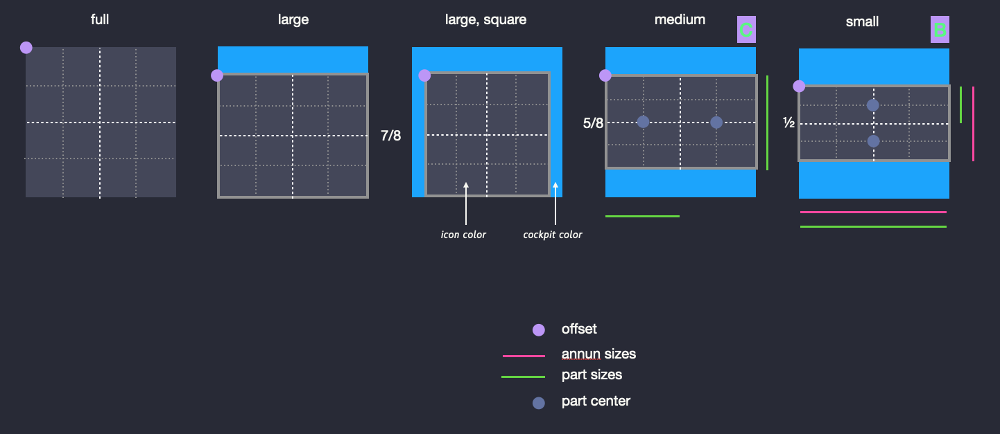
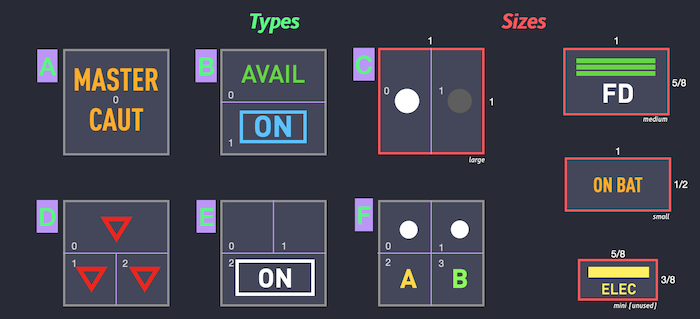
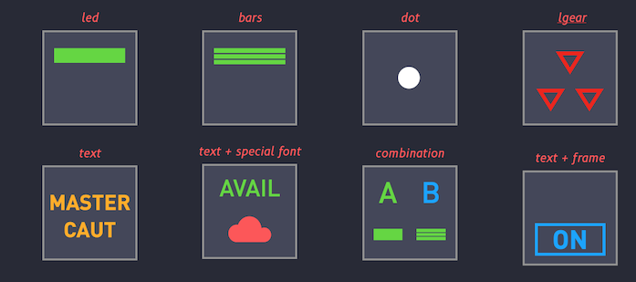
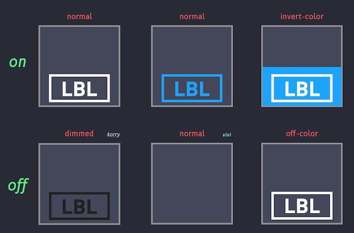
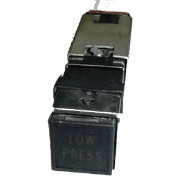
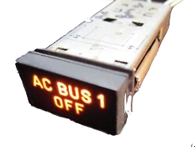
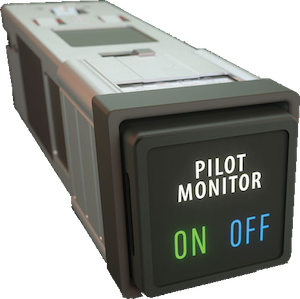
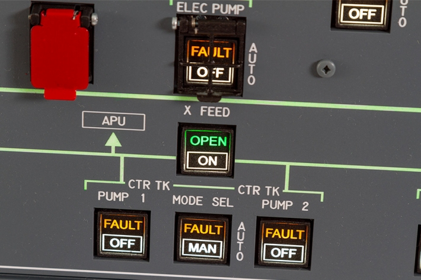
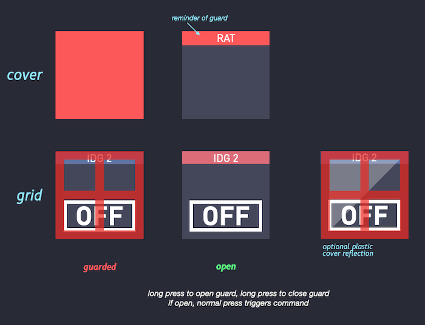
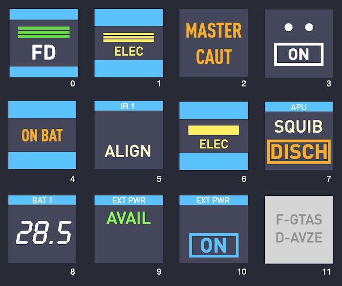

An Annunciator is a special image used for display on a deck key.
An Annunciator image is build dynamically from its definition and from data coming from X-Plane. Airbus airliners extensively use annunciator buttons.
Annunciator do not specify what they do, this is done by the button activation definition. Annunciator only address the representation of the button, the content of the image displayed on a deck key.
On a deck, the representation of keys that accepts images can either be
- One or more icons, the icon being displayed at a given moment is determined by data provided by X-Plane,
- A switch, which is a dynamically built image of a switch or circular switch,
- An Annunciator, which is an alternate image, dynamically built from a definition and data provided by X-Plane or button status.
Annunciator Shapes and Sizes¶
Annunciator Sizes¶
Annunciators exits in 3 sizes:
1. Large, square 1in × 1in.
2. Medium, rectangular, 5/8in × 1in, or smaller but in the 5:8 ratio.
3. Small, rectangular, 1/2in × 1in, or smaller but in the 1:2 ratio. (Or sometimes 3:8 ratio.)
Given the limited size of deck key images (typically less that 100 pixels), annunciator always occupy the maximum space on the key. However, the above size of the annunciator govern the aspect ratio of the image: 1:1, 5:8, 1:2.

Annunciator Model¶
Annunciator can display from 1 to 4 different data or information on a single key. Depending on the annunciator model, data is displayed on two rows, in two colums.

Each portion of an annunciator that can be used to display information is called an (annunciator) part. In an annunciator of type A, there is only one part called A0. In an annunciator of type E, there are three parts, E0, E1, and E2, arranged like shown on the above illustration.
Annunciator of type F can display 4 different informations. The button underlying such an annunciator has therefore 4 distinct values.
Annunciator Parts¶
Each annunciator part is defined independently of the other parts.
In a part, displayed information is either
1. A Text, which can optionally be framed, or
2. A LED of some kind: Block, bars, dot, or lgear (a small triangle)
(Since Cockpitdecks provides icon fonts, (or you can load your own font,) it is possible to display any icon from a font with Text information and optionally frame it.)
Annunciator Definition¶
- index: 5
name: A/THR
type: annunciator-push
annunciator:
size: medium
model: B
parts:
B0:
color: lime
led: bars
dataref-rpn: ${AirbusFBW/ATHRmode}
B1:
text: A/THR
color: white
size: 60
dataref-rpn: "1"
command: AirbusFBW/ATHRbutton
The Annunciator defintion starts at the annunciator: attribute.
Attributes¶
model¶
Code letter from A to F to specify how annunciator parts are organised on the annunciator.
size¶
Annunciator size: large, medium or small. Full size is a large size that occupies the whole square button. Size mini exists but is practically not used.
parts¶
The part attribute can be used to group all part definitions.
Each part is addressed by the name of the part: A0, B0, B1, etc. The content is the part definition.
Part Definition¶
B0:
color: lime
led: bars
dataref-rpn: ${AirbusFBW/ATHRmode}
Text or LED¶
The part definition must contain either a text attribute or a led attribute.

Status On - Off¶
A part is either lit or not, On or Off. Either status can be represented by supplying background and foreground colors.

Attributes¶
Text¶
Text-format¶
Font¶
Size¶
Color¶
Invert Color¶
Off Color¶
Led¶
Data Value¶
Dataref¶
Formula¶
Annunciator Style¶
There are two styles of annunciators. Both are named after major brands of annunciator manufacturer. Annunciators appears differently according to their style.
The first style is Korry (annunciator-style: k), where the annunciator appears like a translucent window with back light. When the annunciator is not lit, the text or drawing is slightly readable on the display. When lit, the text appears to glow.


The second style is Vivisun (annunciator-style: v). When the annunciator is not lit, it has the color of the button (usually black) and no text is readable. When lit, displays on a Vivisun annunciator are sharp, very much like a "retina display" (high resolution display).

Both styles truthfully reproduce keys on decks. Combined with the adjustment of the intensity of the deck back light, they provide a real immersive experience.
annnunciator-style can be defined at the Cockpit, Deck, or Page level.
Guard¶
Annunciators can optionally be protected by plastic cover guards.
Guards¶

Guards as Drawn¶

Attributes¶
dateref
Dataref path to value driving the guard status (open or protected).
type
Cover or grid
color
Color of guard. Defaults to red.
Translucent color (with alpha, or transparency channel) can be supplied.
color: (255, 0, 0, 100)
Is a translucent red color (r,g,b,a), a=0=transparent, a=255=full opaque.
Design Examples¶
